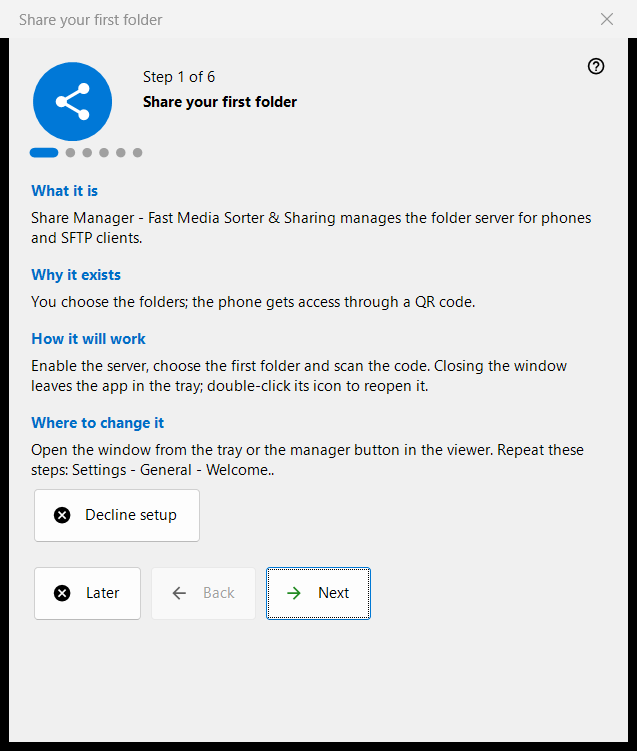
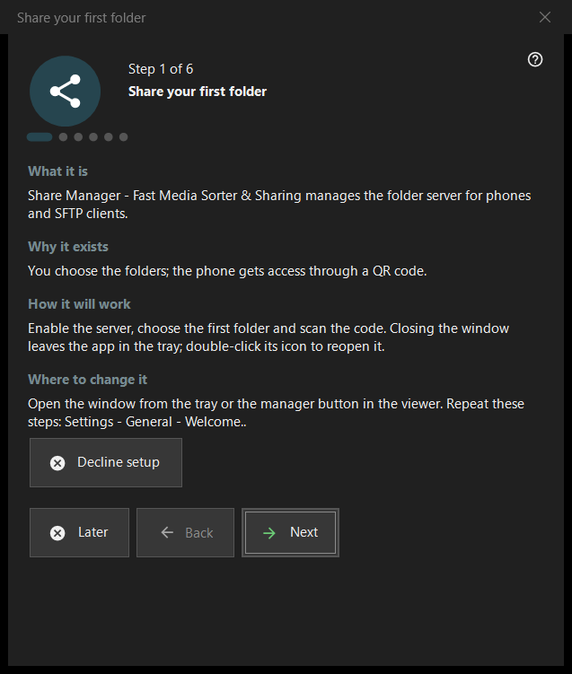

Share your first folder
What this is for
A six-step wizard that takes you from nothing to a folder served to your phone: it turns the server on, picks the first folder, sets the port and the basic options and ends on a status check. It opens on the first start of the Share Manager and can be replayed from Settings.


In this order
- Read the introduction and press 'Next'.
- On 'Turn the server on' press the button once and confirm the administrator prompt.
- Choose the first folder and its options.
- Keep or change the port.
- Set the language, startup and local-network options.
- On the last page check the status, open the QR code and press 'Finish'.
The elements
Steps and buttons
The footer shows 'Step N of 6'. 'Back' and 'Next' move between pages, 'Next' becomes 'Finish' on the last page, 'Later' closes the wizard and keeps what you already confirmed, and 'Decline setup' closes it for good. Every page has four short blocks: 'What it is', 'Why it exists', 'How it will work' and 'Where to change it'.
Turn the server on
The server is off until this step. The enable button asks for administrator rights once and adds one Windows Firewall rule for the program. If you cancel the prompt the server stays off and you can try again; if it is already on, the page says no further elevation is needed.
First folder
Choose a folder, then its name, profile and access. 'Add the first resource now..' opens the resource wizard. At least one folder is needed to continue. The settings go to the server, and folders stay editable in the main window's list.
Port
'Chosen by the system' assigns a port once and keeps it; 'Fixed port:' lets you type your own number, for example for router port forwarding. The number is written into every QR code and .fmscfg file, so changing it later stops the codes already handed out. The firewall rule belongs to the program, not to the port.
Basic settings
'Interface language', 'Start at Windows logon', 'Open the manager window at startup' and 'Local network only (no internet access)'. Local-network mode switches off port forwarding and the internet address. The startup option of the Store version is managed in Windows settings.
Finish
The last page checks the server and the chosen folders and shows the result; a green status means a share is really running with folder access. 'QR code for the phone' opens the code and 'Refresh' repeats the check. If the status needs attention, fix the cause in the main window or go back to the folder step.
Replaying the wizard
Settings - General - 'Welcome..' opens a menu with 'Repeat folder setup', which opens this wizard again.
Manager settings · SFTP sharing settings · Exchange server settings